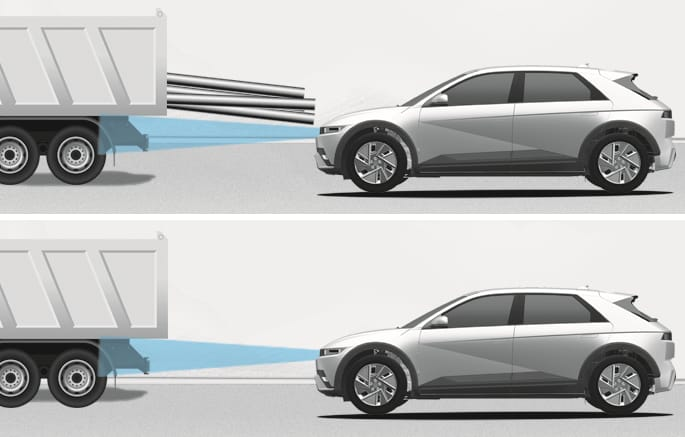
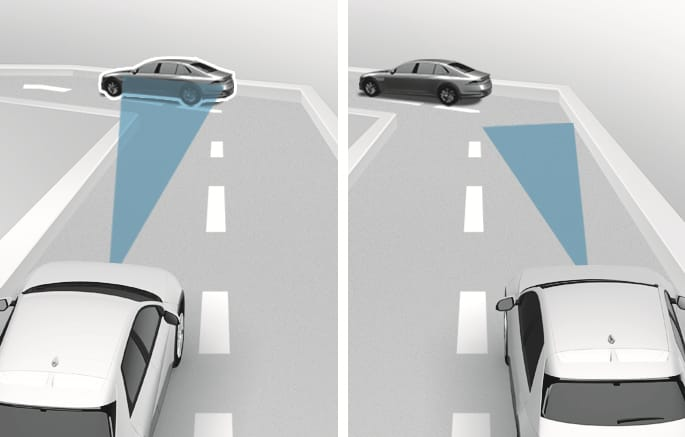
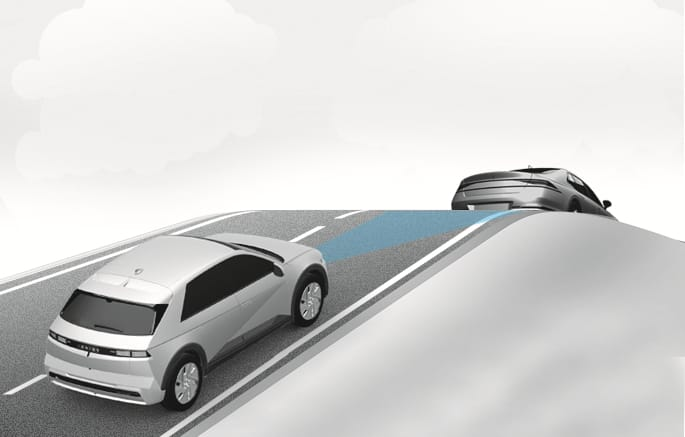
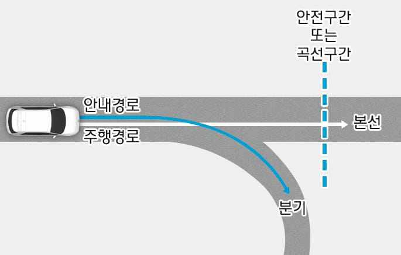
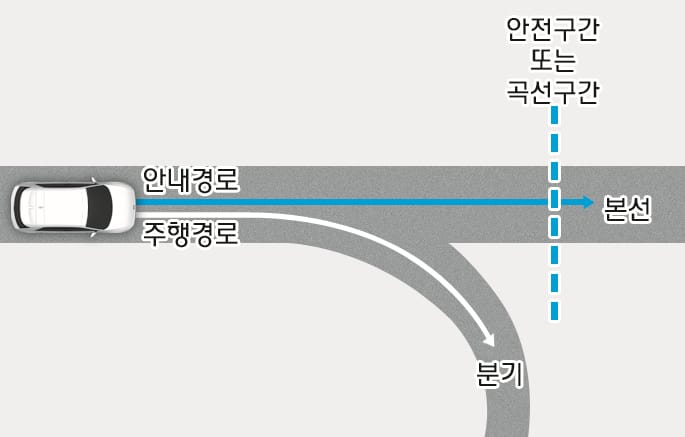

스마트 회생 제동 사용 시 주의사항
스마트 회생 제동 기능을 안전하고 효율적으로 사용하기 위해, 기능 사용 전 다음 주의사항을 숙지하십시오.
도로 상황과 차량의 주행 상태에 주의하고, 필요한 경우 직접 주행 속도를 조정하십시오.
-
센서 또는 센서 설치부 주변을 임의로 분해하거나 충격을 가하지 마십시오. 센서 주변에 충격이나 압력을 가하는 경우 부품이 정상 위치를 벗어나 시스템이 정상적으로 작동하지 않을 수 있습니다.
-
센서 및 센서 설치부 주변을 항상 깨끗하게 유지하십시오.
-
범퍼 및 센서 설치부 주변에 번호판 프레임이나 기타 액세서리, 스티커, 필름, 몰딩 등을 부착하거나 차량의 그릴을 임의로 교체하지 마십시오.
-
전방 레이더 커버는 반드시 품질과 성능이 적합한 부품을 사용하십시오. 순정부품은 품질과 성능을 당사가 보증하는 부품입니다. 임의로 도장이나 도색 처리를 하지 마십시오.
-
센서나 센서 주변에 고압수를 직접 분사하거나, 날카로운 물체 등으로 표면을 긁지 마십시오. 센서가 고장 나거나 센서 표면이 손상될 수 있습니다. 센서의 이물질을 제거할 때에는 차체에 손상을 주지 않는 부드러운 헝겊을 사용하십시오.
스마트 회생 시스템의 반응이 지연되거나 경사 끝 또는 커브 구간을 지날 때 전방 감지 센서가 전방 차량을 갑자기 인식하는 경우 회생 제동량이 증가해 주행 속도가 급하게 감소할 수 있으므로 주의하십시오.
-
다음과 같은 대상은 정상적으로 인식하지 못할 수 있으므로 주의하십시오.

2C_SmartRegenerationSystemDetectingVehicle
-
이륜차, 자전거, 경운기 등 소형 차량
-
차로의 한쪽으로 치우쳐서 주행하는 차량
-
속도가 매우 낮은 차량 또는 급격하게 감속 중인 차량
-
짐을 싣지 않은 트레일러 등 후면 형상이 작은 차량
-
차고가 높거나 뒤쪽으로 적재물이 돌출되어 있는 차량
-
-
전방 차량 앞에 다른 차량이 정지해 있을 때, 전방 차량이 다른 차선으로 이동하면 전방 감지 센서가 정지해 있는 차량을 인식하지 못할 수 있으므로 주의하십시오.
커브 길을 주행할 때 다음 사항을 주의하십시오.

2C_SmartRegenerationSystemDrivingOnCurve
-
동일 차로 전방의 차량을 인식하지 못하는 경우 회생 제동량이 감소해 차량이 가속할 수 있으므로 주의하십시오.
-
다른 차로의 차량을 전방 차량으로 인식하는 경우 회생 제동량이 증가해 차량이 감속할 수 있으므로 주의하십시오.
-
인식하지 못했던 차량을 갑자기 인식하는 경우 갑자기 회생 제동량이 증가해 차량이 감속할 수 있으므로 주의하십시오.

2C_SmartRegenerationSystemDrivingOnIncline
오르막 또는 내리막 경사로에서 타력 주행 중 경사도가 변경되거나 경사가 끝나는 구간을 주행할 때, 전방 차량을 인식하지 못하거나 인식하지 못했던 전방 차량을 갑자기 인식해 회생 제동량이 크게 변경될 수 있으므로 주의하십시오.
경사로 주행 시에는 주의 깊게 도로 상황을 살피고, 필요한 경우 직접 브레이크 페달을 밟아 감속하십시오.

2C_SCCChangingLane
상대 차량(B)이 차로를 변경해 운전자 차량(A) 앞으로 끼어드는 경우, 센서의 감지 범위에 진입하기 전까지 합류 차량의 인식이 지연될 수 있으므로 주의하십시오.
기능을 사용하기 전 다음 주의사항을 숙지하십시오.
스마트 회생 제동 기능이 내비게이션과 연동될 때 내비게이션이 수신하는 정보에 따라 내비게이션 기반 조절 기능이 작동합니다.
'내비게이션 기반 조절'은 내비게이션 정보를 기준으로 스마트 회생 제동량을 조절하는 기능입니다.
-
주행 중 표지판, 도로 통제 정보 등을 통해 도로의 실제 제한 속도를 확인하십시오. 내비게이션이 제공하는 제한 속도 정보와 실제 도로의 제한 속도 정보에 차이가 있는 경우 내비게이션 기반 조절이 정확하지 않을 수 있습니다.
-
내비게이션의 경로 안내 시점과 내비게이션 기반 조절의 시작 및 종료 시점 간에 다소 차이가 있을 수 있으므로 주의하십시오.
-
전용 도로 본선 주행 중 국도 이하의 일반 도로, 전용 도로 휴게소, 졸음쉼터, 진출입로(IC), 분기점(JC)으로 진입해 도로 유형이 바뀌는 경우, 내비게이션 기반 조절이 잠시 동안 지속된 후 꺼지므로 주의하십시오.
-
일반 도로로 이어지는 전용 도로 진출로 종점에서 내비게이션 기반 조절이 꺼질 수 있으므로 주의하십시오.
-
다른 차량이나 트레일러를 견인하는 경우 안정적인 차량 제어를 위해 내비게이션 기반 조절을 사용하지 마십시오.
-
내비게이션 기반 조절 중 가속 페달을 밟아 차량을 가속할 수 있습니다. 이 때, 내비게이션 기반 조절에 의한 감속의 영향을 받지 않으려면 충분히 가속하십시오.
-
내비게이션 기반 조절 중 가속 페달을 밟아 차량을 가속하였다가 페달에서 발을 떼면 스마트 회생 시스템에 의해 차량을 급격하게 감속할 수 있으므로 주의하십시오.
-
도로의 노면이 고르지 않거나 차선이 좁은 경우 내비게이션 기반 조절 작동 시의 감속이 충분하지 않게 느껴질 수 있습니다.
다음과 같은 상황에서는 내비게이션 기반 조절 기능이 작동하지 않을 수 있으므로 주의하십시오.
-
인포테인먼트 시스템 오류로 지도 정보가 수신되지 않는 경우
-
과속단속 지점 및 구간 정보가 업데이트되지 않은 경우
-
실시간 GPS 정보 또는 지도 정보에 오류가 있는 경우
-
지도 정보가 없는 곳을 주행하는 경우
-
내비게이션 안내 경로로 주행하지 않는 경우
-
경로를 재탐색하거나 취소하는 경우
-
터널 등에서 GPS 신호가 수신되지 않거나, 상하로 구분된 도로, 다른 도로가 인접해 있는 구간 등 GPS로 차량의 정확한 위치를 파악하기 어려운 구간을 지나는 경우
-
인포테인먼트 시스템에서 Android Auto나 CarPlay와 같은 스마트폰 연동 기능을 작동하는 경우
-
주행 중 내비게이션 소프트웨어가 업데이트되거나 내비게이션이 재부팅되는 경우
-
시설 공사 또는 통제된 도로를 주행하는 경우
-
본선이 두 개 이상으로 분리되었다 다시 합류하는 형태의 도로를 주행하는 경우
-
짧은 구간 내에 여러 개의 분기 구간 또는 합류 구간이 있는 경우
-
분기점 또는 합류점 이외 구간에서 차로가 생기거나 없어지는 경우
내비게이션이 정확한 주행 경로를 인식하기 전까지는 실제 주행 경로가 아닌 안내 경로의 안전 구간 정보에 따라 회생 제동량이 조절되므로 주의하십시오.
-
내비게이션이 분기 경로로 안내할 때 본선 주행을 계속하거나 본선 경로를 안내할 때 분기 경로로 주행하는 경우, 내비게이션이 정확한 주행 경로를 인식할 때까지 약간의 시간이 소요될 수 있습니다.

2C_NSCCLimitation

2C_NSCCLimitation_2
-
차량이 전용 도로 진출입로(IC)나 분기점(JC)으로 진입했을 때 내비게이션이 안내 경로 이탈을 감지하는 경우 내비게이션 기반 조절 기능이 작동하지 않으므로 주의하십시오.

2C_NSCCLimitation_3
-
차량이 전용 도로를 벗어나는 경우, 내비게이션이 정확한 주행 경로를 인식할 때까지 약간의 시간이 소요될 수 있습니다.
-
안내 경로를 설정하지 않는 경우 내비게이션 기반 조절 기능이 작동하지 않습니다.